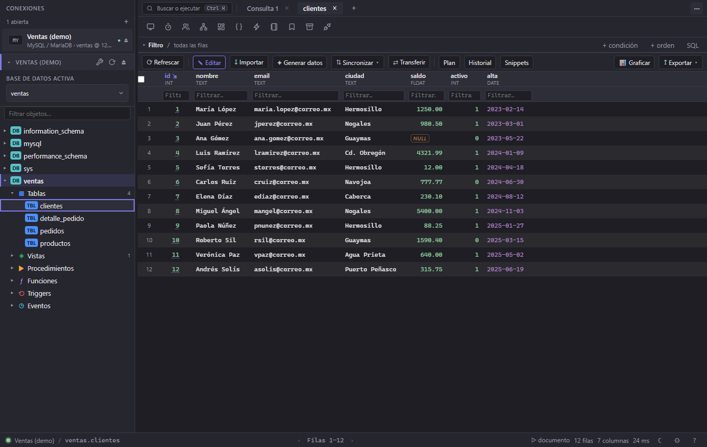

Tus bases de datos, en una app que arranca al instante.
Squaero es un cliente de bases de datos nativo y libre. Todo se queda en tu equipo: sin cuentas, sin nube y sin telemetría.
Gratis y de código abierto, con licencia GPL-3.0.
Ilustración: una rejilla con un cambio sin confirmar en la fila 1041, y la vista previa del UPDATE que Squaero ejecutará, con los botones Confirmar y Descartar.
Seis motores y ningún cliente que instalar aparte.
Los clientes de cada motor viajan dentro de Squaero. Conectas por TCP, TLS o un túnel SSH.
- PostgreSQL
- Esquemas, vistas materializadas y TLS con verificación del servidor.
- MySQL y MariaDB
- Edición transaccional, TLS y túnel SSH, también contra MySQL 8.
- Informix
- Por DRDA, sin el Client SDK de IBM, con mensajes de error legibles.
- SQL Server
- Consultas, estructura de tablas y cifrado de la conexión.
- SQLite
- Abres el archivo y editas como en cualquier otro motor.
- MongoDB
- Consultas find y aggregate, de solo lectura.



Lo que haces a diario, sin buscarlo en menús.
Todo lo de esta lista funciona hoy en los motores que lo permiten.
- Editor SQL
- Autocompletado por esquema, formateo, historial, snippets y variables como :cliente.
- Rejilla editable
- Edita, inserta y borra filas en una transacción, con el SQL a la vista antes de guardar.
- Filtros en el servidor
- Filtra y ordena una tabla sin escribir SQL; pasa de página sin volver a consultar.
- Datos relacionados
- Desde una celda, salta a las filas que la referencian o a la que apunta.
- Importar y exportar
- CSV, JSON, XLSX, XML, HTML y SQL. Pegar filas de una hoja de cálculo también vale.
- Diagrama ER
- Las tablas y sus relaciones, desde las llaves foráneas del motor.
- Constructor de consultas
- Arma el SELECT con clics y copia el SQL que genera.
- Respaldo
- Vuelca una base a un archivo .sql y restáurala en otra conexión.
- Usuarios y monitor
- Permisos por usuario, procesos en vivo y consultas lentas.
Nada sale de tu equipo
Conexiones, contraseñas, consultas e historial se guardan en tu equipo. No hay servidor de Squaero al que enviarlos.
Ligero de verdad
Un núcleo en C y el visor web del sistema. Ni Electron ni Java: el instalador de Windows pesa 9 MB.
Código que puedes leer
GPL-3.0, sin licencias por puesto ni funciones de pago. Cada descarga lleva su firma de procedencia.
Frente a lo que ya conoces
Solo lo que se puede comprobar. «Parcial» quiere decir que depende de la edición o de un plugin.
| Característica | Squaero | DBeaver CE | Navicat | TablePlus | HeidiSQL |
|---|---|---|---|---|---|
| Precio | Gratis | Gratis | De pago | Gratis con límites | Gratis |
| Código abierto | Sí | Sí | No | No | Sí |
| Sin Electron ni Java | Sí | No, usa Java | Sí | Sí | Sí |
| Sin telemetría | Sí | Parcial | Parcial | Parcial | Sí |
| Informix | Sí | Sí | No | No | No |
| Vista previa del cambio | Sí | Parcial | Parcial | Parcial | Parcial |
| Windows, macOS y Linux | Sí | Sí | Sí | Sí | Solo Windows |
Donde otros van por delante: Squaero no tiene asistente de IA, y DBeaver y Navicat llevan años cubriendo más motores. Revisado en la web oficial de cada producto: DBeaver, Navicat, TablePlus y HeidiSQL. Si ves una celda inexacta, abre un issue.
Descarga Squaero
Windows
Windows 10 y 11 de 64 bits. Si tenías la versión de 32 bits, la sustituye y conserva tus conexiones.
Descargar el instalador squaero-…-x64.msimacOS
macOS 15 o posterior, en Mac con Apple Silicon. La primera vez, ábrelo desde Ajustes del Sistema → Privacidad y seguridad → «Abrir igualmente».
Descargar el .dmg squaero-…-arm64.dmgLinux
El .deb para Ubuntu 24.04 y Debian 13 o posteriores, o el snap en cualquier distribución. El snap no incluye Informix.
Descargar el .debsudo snap install squaero
Cada archivo lleva su suma SHA-256 en la página de la versión y una firma de procedencia que puedes comprobar con gh attestation verify.